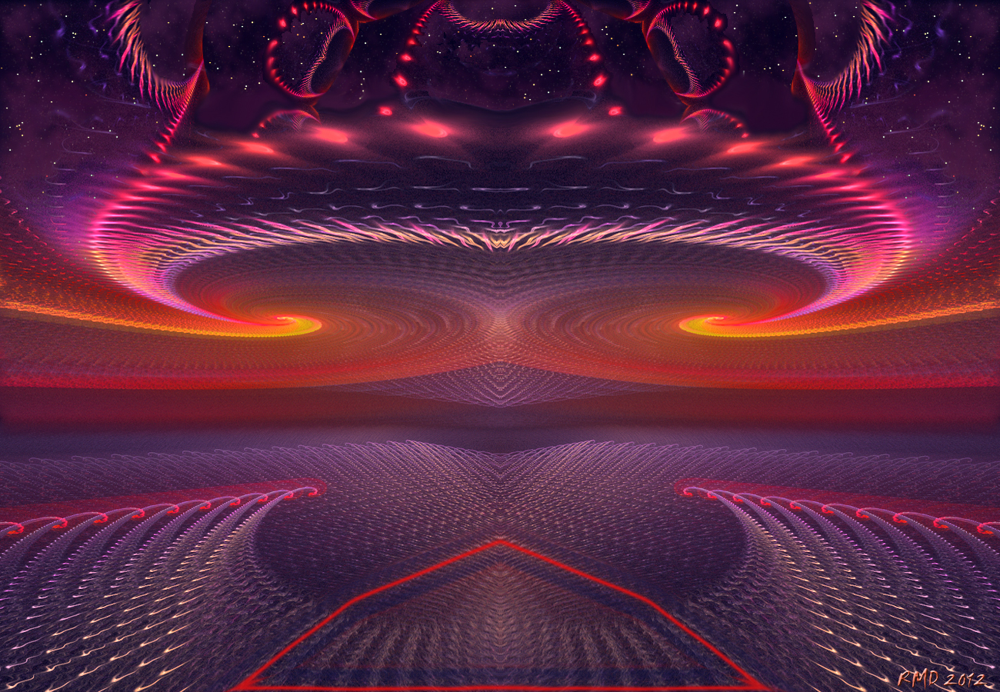

12 Тайна жизни и смерти
Мы бродили в лесу и у карьеров. Внезапно солнце скрылось, я ощутила тревогу. Мне вдруг показалось, что я гляжу на всё, как в последний раз и прощаюсь с миром.
"Кольцо смерти..." - размышляю я разочарованно, - "Я ждала от этого большее... А получилась обманка. Опять громкие слова, а на деле- очередные посиделки до утра. Так тянет заглянуть за грань..."
Весь день я ощущала отчаяние, но при этом еще сохранялся какой-то лучик надежды.
Меня с детства беспокоил вопрос о бессмысленности смерти, о том - что же там дальше. Я много размышляла о смерти в школьные годы, но не так, как другие - для меня в этом не было ничего ужасного и мрачного - напротив, я стремилась разгадать ту самую загадку. Всю жизнь я не понимала, почему люди прячутся от этой темы. Ведь если там, за гранью, ничего нет- то и жить бессмысленно. Ведь должно же там что-то быть!
- Хочу умереть при жизни. Переродиться и открыть тайну. Я должна это выполнить! - говорю мысленно
Вечером мы с Аллой сидели у костра и события всей моей жизни проходили перед глазами. Что-то меня невероятно мучило. Я чувствовала себя птицей, которая не может вырваться из клетки, которая обязана выйти. Мне и вправду хотелось пережить трансформацию, душа просила об этом. И вместе с тем было предчувствие чего-то жуткого, грандиозного. Я дрожжала, в душе начиналась паника. Я пыталась найти причину моего состояния, но не могла. Что опять со мной творят эти хитрые вурдалаки? Меня мучило необъяснимое предчувствие... Я ушла спать пораньше.
Среди ночи я проснулась от сильного, учащенного сердцебиения. Мне стало невероятно страшно, до жути. За мгновение до этого я видела сны, в которых были всполыхи неведомого огня, гул тысячи иерихонских труб, словно приближался апокалипсис. Невероятно яркие картины, сменяющие друг друга, пронзительные, впивающиеся в самую душу.
- Что ты натворила! Затем ты просила о смерти?! - спросил голос
Я находилась в сумеречном состоянии, не в силах подняться. Почему это со мной происходит? Я безумно испугалась за свою жизнь. Неужели начался какой-то приступ? Может, надо принимать меры, срочно! Я хотела позвать Аллу. Но что можно сделать сейчас?
Я ощущала невероятное давление и пульсацию в голове, видела, как работают какие-то удивительные механизмы. Пыталась укрыться от этих картин, но продолжала видеть их через закрытые веки. Что-то жуткое надвигалась.
- Я не хочу умирать! Помогите мне, - шепчу, - пожалуйста! Кто-нибудь...
Словно я неслась куда-то на невероятной скорости и испытывала дичайшие перегрузки. Огненные всполыхи сжигали изнутри, не давая пощады.
Конница, печь, пламя, вращающиеся шестеренки механизма...
- Ты зачем послала сигнал смерти? Что с тобой случилось? - донесся голос
- Прошу вас! Я не хочу умирать! Я жить хочу! Я никогда больше так не буду! Пожалуйста, отпустите меня, я всё поняла!
Но все только продолжалось.
В какой-то миг не осталось ничего, кроме всполыхов. Тела я уже не чувствовала. Это было жутко, при этом невероятно искренне, по-настоящему. Слетели все маски, все чувства усилились и полились через край. Это было Настоящее. Алые, розовые, фиолетовые, синие и черные краски разливались передо мной, образуя неведомые узоры, как в коллейдоскопе.
- Это смерть. Смотри.. это происходит прямо сейчас, здесь, с тобой... Вся эта сцена - ради тебя.
- Но я не могу умереть! Я не могу оставить моих родителей! Им никто не поможет!
- Поздно...
Сопротивляться было бессмысленно, связи с телом уже не было.
Теперь я была просто свидетелем.
Мне было невообразимо жаль свою жизнь. Как же я могла умудриться захотеть умереть?
Я осознала, что потеряла самое бесценное, что имела. Я бы все отдала, лишь бы только бы все откатить назад, почувствовать ночную прохладу, а по утру встать и вновь, хотя бы еще раз встретить в лесу рассвет. Мне ничего было не уже не нужно, никакие подтверждения и выходы за грань. Только проживать эту жизнь такой, какая она есть, принимать ее как подарок.
Что же я натворила!
Но происходящее завораживало: это было неописуемо, я проваливалась в водоворот испепеляющих цветов, в котором все было абсолютно честное, родное до боли.. я перепроживала свои детские сны, мимо меня проносились воспоминания.
Смерть... действо, которое длилось специально ради меня.
- Пожалуйста, помогите мне! - кричу, - сделайте что-нибудь
- Что? - спросили существа. В тот момент возникло четкое ощущение, что они - моя Семья.
- Ладно, я согласна, пусть так, но мне важно, чтобы моё физическое тело выжило. Я согласна, чтобы в нём жил кто-нибудь другой, более мудрый, чем я! Только не оставляйте моих родителей! Они не смогут без меня выжить!
Поток еще усилился, но цвета резко сменились. Кончился красный.
- Выброси все свои концепции! Оставь всё! Ты слишком тяжелая!
Я ощущала себя невероятно тяжелой
- Брось все свои выдумки. Просто откройся!
Я ощущала себя, словно в центрифуге. Если я не сброшу балласт, я расколюсь на тысячи осколков.
- Откажись от всего того, что ты себе надумала!
Я вращалась всё сильнее.
С каждым оборотом я всё выбрасывала. Всё, на что при жизни я не обращала внимание, теперь невероятно давило - все концепции, предвзятые идеи. Сколько же груза было на моих плечах! Я должна то, не должна это...
- Будь естественной! Ты должна быть чиста...
Вокруг словно вспыхнуло множество свечек. Пламя дрожжало. Послышалась странная дребежжащая музыка, словно перезвон стеклянных колокольчиков.
- Свет, свет, свят... - слышался шепот тысячи голосов, - светоч, свет внутри...
Я выбрасывала одно за другим, но в моей памяти было так много противоречий... столько всего, за что я не могла себя простить.
- Брось память! Она слишком тяжелая! Иначе ты не пройдешь.
- Но...
- Бросай!
Обороты ускорялись и ускорялись, мне казалось, что вот-вот меня разорвет на части, расколет на куски...
Не знаю как, видимо, сработал инстинкт самосохранения... я почти в буквальном смысле скинула с себя память, словно бабочка, которая вылетает из куколки...
Я парила и была невероятно легкой. Мучения окончились.
Я была лишь сознанием, без прошлого, без памяти. И я была связана с чем-то грандиозным, цветком среди цветов, связанных общим корнем, как грибницей. Мы были единым целым и в этом заключалось невероятное счастье. Я не была одна - я была частью нас, Великой Матери, но при этом осознавала себя. Как же я любила их! Они были моими самыми родными и близкими, по нам текла общая кровь.
- Мы едины. Вот оно - бессмертие.
Я знала - у нас единая жизнь. Внутри этого дерева, любимого мною существа я бессмертна! Это было невероятно прекрасно переживание... никогда еще я не ощущала столько любви.
- Ты рождаешься...
Я увидела, словно тумблер раскаленной плиты переключился туда, а затем обратно.
В этой сцене что-то неимоверно пугало. Черные круги, вокруг них раскаленные окружности.
- А мог бы и не переключиться. Никогда больше не играй со смертью!
Периодически меня возвращало в моё тело. Но в том мире, где лежало моё тело, словно было нарушено время. Вот я уже приподнялась, вот всё еще снова лежу.. вот вдруг кто-то перехватил мои движения, резко вытянулся и вдохнул воздух, провел непонятные манипуляции над телом.. или нет, этого не было? Я все так же лежу? Я только начинаю приподниматься... вижу одно и тоже по многу раз... словно идут временные искажения, я где-то вблизи черной дыры, куда я проваливаюсь...
- Что случилось? Почему? Кто умер?
Неужели точка смерти теперь здесь, в середине жизни?
Неужели я никогда не выберусь и буду проваливаться вечно?
Чёрная дыра. Жутко и страшно в неё заглядывать, но она тянет меня.
Я изо всех сил отстранилась, вырвалась
- Я этого не выдержу! Я не могу туда смотреть!
- Мы закрыли от тебя этот вечный миг смерти. Ты жива.
Память вновь вернулась ко мне. Это было так тяжело! Словно на меня вновь повесили тяжелую гирю.
- Тебя надо выправить, тогда ты сможешь забрать с собой память. Пока что ты слишком тяжелая.
В это время я возвращалась в тело и пыталась справиться с тем ужасом, которое оно испытывало. Видимо, это знание в наших генах. Знание о смерти.
Я понимала, что если начну паниковать - всё может кончиться плачевно, начнется какой-нибудь приступ. Поэтому я наоборот пыталась всячески успокоить свой организм и отогнать мысли о том, что моё состояние может быть вызвано какой-то тяжёлой болезнью. Всё равно мне сейчас никто помочь не мог, звать на помощь было бессмысленно. В течение некоторого времени я боролась со своим страхом, изо всех сил пытаясь успокоиться, чтобы сердце не стучало так сильно и выжить.
- Откройся, брось всё! Ты должна быть чиста! Надо выжить
Память снова ненадолго исчезла.
По позвоночнику пошел гигантский поток энергии. Мне казалось, что я рождаю сама себя, как ребенка, сама выхожу из себя, мучительно, больно и оживаю...
Позже я осознала - если бы в этот момент была моя повседневная память, то этот поток мог бы меня уничтожить.
Наступила вечность божественного счастья. Я купалась в источнике, сотканном из чистого струящегося света на заре времен. Видела тысячи существ в сияющих волнах света и любви. Мы жили в мире и согласии - нам было нечего делить, ведь мы все выходим из одного, как ветви одного дерева, мы все родные… где-то в другом мире слезы текли по моим щекам. А я просто умудрилась попасть сюда при жизни. Прикоснулась к этому чуду жизни, к самому настоящему, что только есть, к таинству. Я вспомнила эту тайну жизни, о которой мы все забыли… я была чиста и честна до конца. Я плакала от переполняющего душу счастья… я отмучилась наконец. Прекрасные, бессмертные… Я растворилась в источнике первозданной любви, обняла весь мир, приняла и полюбила. Мы были одним. Затем крик… я начала дышать. Сердце билось. Великая сила жизни победила смерть. Я родилась...
- Посмотри, ты рождаешься здесь и сейчас, согласна?
Я видела стены дачного деревянного домика, пробивающийся в окно свет
- Конечно!
Затем вновь я начала проваливаться.
Я начала видеть изнутри историю моего рождения. Реки света, прекрасный узор-цветок, которым я была задумана среди других цветов. И всепроникающий свет любви, я видела удивительные краски рождения. Словно очутилась внутри гигантской живой фабрики, где меня создавали. Это было воспоминание о моём рождении тридцатилетней давности.
Почему же я так долго мучилась, если жизнь так прекрасна? Всё было окружено неведомым сиянием, я была невероятно счастлива... теперь уже никогда не будет, как раньше.
Вскоре все начало утихать, всполыхи исчезали. Давление на голову почти прекратилось. Я поняла, что всё позади.
В окно пробивались лучи солнца, за окном шумел хвойный лес.
- Ты вечный свидетель. Свидетель собственной смерти, видела все, не имея возможности закрыть глаза. Поэтому, и впредь ты будешь видеть сквозь закрытые веки, сквозь время и пространство, сквозь причину и следствия, видеть невидимый мир.
***
Странные явления исчезли почти внезапно. Состояние стало как прежде, словно ничего не произошло - ощущались лишь усталось и недосып.
Сейчас, по прошествии некоторого времени, я понимаю, что скорее не благодаря, а вопреки я получила главное: осознала ценность собственной жизни. Правда, для этого мне пришлось ненадолго умереть. Почему так произошло, помогли ли мне существа - это тайна. На приступ это не похоже - иначе почему все симптомы исчезли по щелчку? Я предполагаю, что ненадолго запустилась заложенная во мне эволюцией программа смерти. В этот момент мы очищаемся. А потом организм выходит из этого состояния, мозг посылает сигналы - стоп, всё нормально, я же не умерла! Наступает катарсис, великое счастье, возвращение с того света и возрождение.
Понимают ли они, эти таинственные существа, что творят? Что это за таинственная сила играет со мной?
Я знаю, что во мне что-то изменилось. Не знаю, какие будут последствия такого жесткого вмешательства в разум в результате "короткого замыкания"... Нельзя просто так без последствий запускать эту программу при жизни. Но я не жалею. Это было необходимо. Я вспомнила давно забытую тайну. И за это я благодарна, правда, до конца не знаю, кого благодарить.
